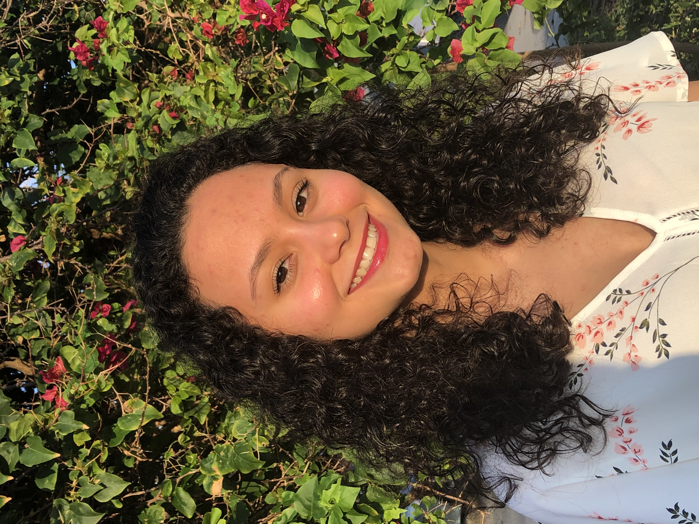

Isabella Rodriguez's Portfolio
Hello there! Welcome to my portfolio. My name is Isabella. I am a junior attending the University of Florida pursuing a bachelor's degree in Computer Science.
If you want to know a bit more about my professional career, check out my Linkedin and Github.
I was born in Cuba in 1999. For the first 14 years of my life, I lived in the same town in Artemisa, Cuba. It was a small, humble town where everyone knew each other. Even though my parents were in the fields of Medicine and Engineering, their work was not highly compensated. Therefore, I did not have much growing up. From those experiences, I learned that good things require sacrifice. I also learned to value everything that I have and to be grateful for it.
Life in Cuba was very tough, and we knew moving to a different country would be the best. I came to the United States six years ago, and even though the journey to adapt to a new country has not been easy, it has been worth it.
My love for Computer Science started in my senior year of high school. My calculus teacher sponsored a club called Young Innovators and I decided to join. From that moment on, I have been wanting to learn more and more about the Tech world.
Besides computing, I love everything that has to do with art. Photography, drawing, graphic design, and makeup are some of those things. I also enjoy nature and animals. I would love to travel a lot in the future, especially to Italy and Switzerland.
Click here to see some pictures that I am proud of!
Click here to see some movies, shows, books, and musicians that I love!
Click here to learn random fun facts about me:
Click here to fetch message: